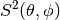
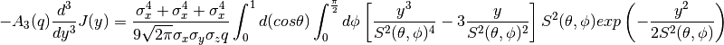

The fitted function for y-Space converted values is as described by G. Romanelli. [1].

Where  is given by:

The  Final State Effects (FSE) correction is applied as an additive
correction expressed as:
Final State Effects (FSE) correction is applied as an additive
correction expressed as:

| Name | Type | Default | Description |
|---|---|---|---|
| IntegrationSteps | Integer | 256 | Length of each dimension of integration grid (must be even) |
| Name | Default | Description |
|---|---|---|
| Mass | 0.0 | Atomic mass (amu) |
| Intensity | 1.0 | Gaussian intensity parameter |
| SigmaX | 1.0 | Sigma X parameter |
| SigmaY | 1.0 | Sigma Y parameter |
| SigmaZ | 1.0 | Sigma Z parameter |
C++ header: MultivariateGaussianComptonProfile.h (last modified: 2020-03-20)
C++ source: MultivariateGaussianComptonProfile.cpp (last modified: 2020-03-20)